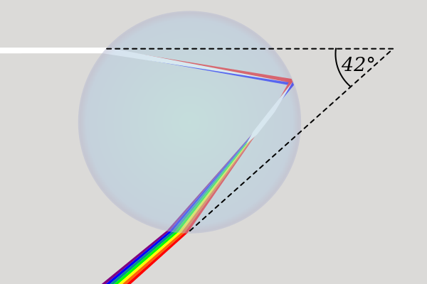

You already know the answer to the Ultimate Question of Life, the Universe, and Everything is 42. Douglas Adams told you so, and you laughed, because that was the point. But what if the joke had an echo? What if 42 showed up, uninvited, in places Adams never looked...
You're allowed to find this article coincidental. You're allowed to find it compelling. Both responses are intellectually respectable. What would be a shame is not thinking about it at all.
In 1979, Douglas Adams needed a number. He was writing The Hitchhiker's Guide to the Galaxy, and the supercomputer Deep Thought (built to answer the Ultimate Question of Life, the Universe, and Everything) needed to deliver its result after 7.5 million years of computation.
Adams later described the moment: he explained that he was sitting at his desk, staring into the garden, and thinking, "42 will do". He was a committed atheist. He wanted something mundane, ordinary, and funny in its very plainness. He chose 42.
Adams on the number: Adams was reportedly bemused and mildly irritated when people tried to find hidden meaning in his choice. He insisted it was arbitrary, just an ordinary, smallish number that happened to feel right. He was not consulting scripture.
The joke, of course, is that the answer is useless without the question. Humanity gets its answer and discovers it means nothing, because we never understood what we were actually asking. Adams was satirising the human compulsion to seek cosmic meaning in a universe he believed offered none.
Fair enough. Except 42 then turned up somewhere Adams never intended it to go.
The Gospel of Matthew opens with a genealogy. Most readers skim it, an ancient list of names, begetting and begetting, stretching back through kings and exiles to Abraham. Easy to overlook. But Matthew wasn't just listing ancestors. He was making an argument with arithmetic.
The book of the ancestry (genealogy) of Jesus Christ (the Messiah, the Anointed), the son (descendant) of David, the son (descendant) of Abraham.
Matthew 1:1
So all the generations from Abraham to David are fourteen, from David to the Babylonian exile (deportation) fourteen generations, from the Babylonian exile to the Christ fourteen generations.
Matthew 1:17
Behold, the virgin shall become pregnant and give birth to a Son, and they shall call His name Emmanuel — which, when translated, means, GOD with us.
Matthew 1:23
14 + 14 + 14 generations = 42. Fourteen, times three, equals forty-two. Matthew deliberately structured the entire sweep of Israel's history, two thousand years of it, into 42 generations, with Jesus Christ as the destination point. Generation 42. The arrival of the Messiah.
This wasn't numerological decoration. In the ancient world, structured genealogies were theological arguments. Matthew was saying: history wasn't random. It was moving somewhere. And it arrived here, at this Person, at generation 42.
Jump forward to the Book of Revelation, the strangest, most debated text in the Christian canon. Amid its visions of beasts and horsemen and a heavens-splitting final judgment, one detail stands out.
And the beast was given the power of speech, uttering boastful and blasphemous words, and he was given freedom to exert his authority and to exercise his will during forty-two months (three and a half years).
Revelation 13:5
Forty-two months. Not indefinitely. Not forever. The beast is granted a precisely bounded window. After those 42 months expire, according to Revelation 19, Christ returns as judge. The bounded period ends. The era of apparent evil dominion closes.
Notice the structure forming: 42 marks the arrival of Christ at history's first great turning point. And 42 marks the limit of evil's authority before Christ's return at history's final turning point.
42 generations before the first coming of Jesus Christ.
42 months before the second coming of Jesus Christ.
Whatever you make of biblical prophecy, that's a striking symmetry within the text itself. The number isn't imported from outside, it's doing structural work at both ends of the Christian narrative. It brackets the entire story.
The bracket, 42 generations to the first coming, 42 months before the second, would already be striking on its own. But when you look more carefully at where else the number 42 appears within scripture, a quieter pattern emerges. Not just around Christ. Within the story of Christ.
Seven centuries before Jesus was born, the prophet Isaiah wrote what scholars call the first of the great Servant Songs:
"Behold, My Servant, whom I uphold;
My Chosen One in whom My soul delights.
I have put My Spirit upon Him;
He will bring forth justice to the nations.
Isaiah 42:1
This verse sits at Isaiah chapter 42, verse 1. When Jesus is baptised in the Gospel of Matthew, a voice comes from heaven: "This is My beloved Son, in whom I am well-pleased and delighted!" It is a direct echo of Isaiah 42:1, GOD identifying His servant, the Messiah. The prophecy and its fulfilment are bound together by the number of the chapter itself.
Then there is a moment in the Gospel of Matthew so understated it is easy to miss. Jesus is asked a question. The religious leaders are trying to trap him, pressing on theology and authority and the nature of the Messiah. He turns the question back on them:
"What do you [Pharisees] think of the Christ (the Messiah, the Anointed)? Whose Son is He?" They said to Him, "The son of David."
Matthew 22:42
Matthew 22, verse 42. Jesus himself, at verse 42, asks the central question of all of human history. Not a commentator. Not a theologian. The man himself. Who do you think I am? It is the question the entire argument turns on, appearing at verse 42 of the chapter.
And then, after the resurrection, after Pentecost, after everything, what did the early church actually look like? What did people do once they had found the answer?
They were continually and faithfully devoting themselves to the instruction of the apostles, and to fellowship, to eating meals together and to prayers.
Acts 2:42
Acts 2:42. The answer to life, the universe and everything lived out in community, teaching, shared meals, and prayer. Not a philosophy. Not a system. A way of being together around a Person.
Finally, there is a verse that speaks directly to what lies on the other side of Revelation's 42 months, beyond the beast, beyond tribulation, beyond death itself:
So it is with the resurrection of the dead. The [human] body that is sown is perishable and mortal, it is raised imperishable and immortal.
1 Corinthians 15:42
The 42 that brackets evil's reign in Revelation doesn't end in darkness. It ends in this: transformation, resurrection, incorruption. The bounded period of death's apparent dominion gives way to something that cannot decay.
Here is where the argument takes an unexpected turn into physics.
42° is the precise geometric angle at which a primary rainbow becomes visible to the human eye. Not approximately 42°. Exactly 42°. When sunlight enters a spherical raindrop, refracts, reflects off the back wall, and refracts again on the way out, the light concentrates (piles up) at a minimum deviation angle of 42° from the anti-solar point. Below that angle, no rainbow. Above it, no rainbow. At 42°, the red outer arc blazes into existence.

The geometry is exact. The violet inner edge forms at 40°. A secondary double rainbow appears at 51°. But the primary bow, the one every child points at, the one that stops you in your tracks, exists because of 42.
The 42° angle arises from Snell's Law applied to a spherical water droplet. Light "stacks up" at the angle of minimum deviation, producing the intense concentration we see as colour. The rainbow isn't a thing in the sky, it's a geometric relationship between the sun, the raindrop, and your eye. Every observer sees their own personal rainbow, centred on the anti-solar point directly opposite the sun. The arc you see is the base of a cone of 42°.
Now consider where the rainbow appears in the Bible. Its first mention is in Genesis.
I set My rainbow in the clouds, and it shall be a sign of a covenant between Me and the earth.
Genesis 9:13
GOD's covenant with Noah after the flood, the sign that destruction of this kind will not come again. A promise encoded in light and water. And its final appearance is in Revelation.
And He who sat there appeared like [the crystalline sparkle of] a jasper stone and [the fiery redness of] a sardius stone, and encircling the throne there was a rainbow that looked like [the color of an] emerald.
Revelation 4:3
A rainbow encircling the very throne of GOD at the end of all things.
The rainbow brackets the biblical narrative in the same way 42 brackets the Christ narrative. It appears at the first great covenant and at the final vision of eternity. And the physical phenomenon it describes, the one that makes it visible, the one written into the laws of optics, requires exactly 42°.
The angle that makes a rainbow visible.
The number that brackets the story of Christ.
Written into the physics of light itself.
If you were constructing a universe with intent, and you wanted to leave a signature in the fabric of nature itself, one that the curious might eventually notice, encoding your number into the geometry of the most universally recognised symbol of hope and covenant is exactly the kind of thing you might do.
Douglas Adams stared into a garden and chose 42. He didn't know he was pointing at the angle of a rainbow. He didn't know he was pointing at Matthew's genealogy. He just thought it would do.
Perhaps it does more than he intended.
| Source | The 42 | What it marks |
|---|---|---|
| Hitchhiker's Guide | 42 - The Ultimate Question of Life, the Universe, and Everything | A punchline about meaninglessness, an answer without question |
| Isaiah 42:1 | The Servant Song, "My Chosen One in whom My soul delights" | Prophecy of Christ, echoed at his baptism 700 years later |
| Matthew 1:17 | 42 generations from Abraham to Jesus | The arrival of the Messiah, the culmination of history |
| Matthew 22:42 | "What do you [Pharisees] think of the Christ (the Messiah, the Anointed)? Whose Son is He?" | Jesus asks the central question, at verse 42 |
| Acts 2:42 | The early church: doctrine, fellowship, breaking of bread, prayer | What life looks like once the answer is found |
| Revelation 13:5 | 42 months of the beast's authority | The limit of evil, the countdown to Christ's return |
| 1 Corinthians 15:42 | "Sown in corruption; raised in incorruption" | What lies beyond the beast's 42 months: resurrection |
| Physics of Light | 42°, the exact angle of a primary rainbow | The covenant sign of Genesis and throne of Revelation, built into optics |
None of these individually proves a grand design. A skeptic will reasonably note that a text as large as the Bible will produce meaningful-seeming verses at almost any number you choose. That is a fair point, and it deserves to stand.
But consider what this particular cluster of 42s actually contains: a prophecy of the Servant (Isaiah 42:1), the question of Christ's identity (Matthew 22:42), the life of the early church (Acts 2:42), and the promise of resurrection (1 Corinthians 15:42). That's not random noise. That's a coherent theological sequence: prediction, question, community, hope. All surfacing at the same number.
Prophecy. Identity. Community. Resurrection.
All at verse 42.
Here is where we have to be honest with each other.
The Adams connection is not proof of anything. A committed atheist staring into a garden and picking a number at random for their book does not prove divine communication. You're right to raise an eyebrow. Coincidences happen. Numbers appear in multiple places. Pattern-seeking is one of the human brain's most reliable, and most unreliable features.
And yet.
What if GOD, if there is a GOD, has a sense of humour? What if the Creator of the universe occasionally allows a joke to land on the wrong side of eternity, just to see who notices?
An atheist, intending satire about meaninglessness, "accidentally" gets a thought put in his head from GOD, that echoes a number that the Bible places at the hinge points of all of history. He picks it because it feels ordinary. Because it's just a number. Because nothing about it should matter.
If you're a believer, that's a wink from GOD. If you're not, it's a coincidence. The honest truth is that neither of us can prove which it is. But it is, at minimum, a curious thing to sit with.
The biblical argument doesn't actually depend on Adams. The Matthew-to-Revelation symmetry stands entirely on its own. But it does invite a question that Adams' novel was also, in its satirical way, asking: Is there an answer? And if so, does it mean anything?
The Gospel of John explains who Jesus is:
In the beginning [before all time] was the Word (Christ), and the Word was with GOD, and the Word was GOD Himself. He was [continually existing] in the beginning [co-eternally] with GOD. All things were made and came into existence through Him; and without Him not even one thing was made that has come into being. In Him was life [and the power to bestow life], and the life was the Light of men.
John 1:1-4
The Gospel of John also records Jesus making the most direct claim in the New Testament:
Jesus said to him, “I am the [only] Way [to GOD] and the [real] Truth and the [real] Life; no one comes to the Father but through Me.
John 14:6
These verses are a direct answer to the Ultimate Question of Life, the Universe, and Everything. And this quote from Jesus is the most important sentence ever spoken.
What the number 42 does, in its quiet, structural way, is suggest that the biblical text was written by people who believed history was moving toward, and then away from, a single point. That the universe has a shape. That the answer to everything isn't a number at all, but a Person.
Adams was right that 42 is an answer. The Bible's argument is that he was wrong about it being meaningless.
And if you were wondering, the number 42 is not found in the textual narrative of the quran, the book of the world's next largest religion (islam). Nor do any other references of 42 anywhere have even a small amount of significance compared to what has been outlined in this article.
It's not asking you to convert. It's not asking you to find the nearest church. It's not asking you to abandon your skepticism, which is, genuinely, a reasonable response to extraordinary claims.
It's asking you to notice that Adams' joke about meaninglessness might have bumped into something that claims the opposite. That the number he chose at random in his garden is the same number Matthew used to mark the arrival of the Messiah, Revelation used to mark the boundary of evil's reign, and the physics of light uses to produce a rainbow (the oldest covenant sign in the Bible).
Coincidence? Almost certainly, if there is no GOD.
A wink? Definitely, if there is.
The Answer was always there.
The question is whether you want to believe in Him so you can have eternal life.
∞ ∞ ∞
Written in good faith for the genuinely curious.
Disagreement is welcome. Dismissal without thought is the only waste.
P.S. Checkmate atheists. You'll have to do posthumous revisions to Adams' book now with a new number.
Isaiah 42:1 · Matthew 1:17 · Matthew 22:42 · Acts 2:42
Revelation 13:5 · 1 Corinthians 15:42 · John 14:6 · Genesis 9:13 · Rainbow: 42°